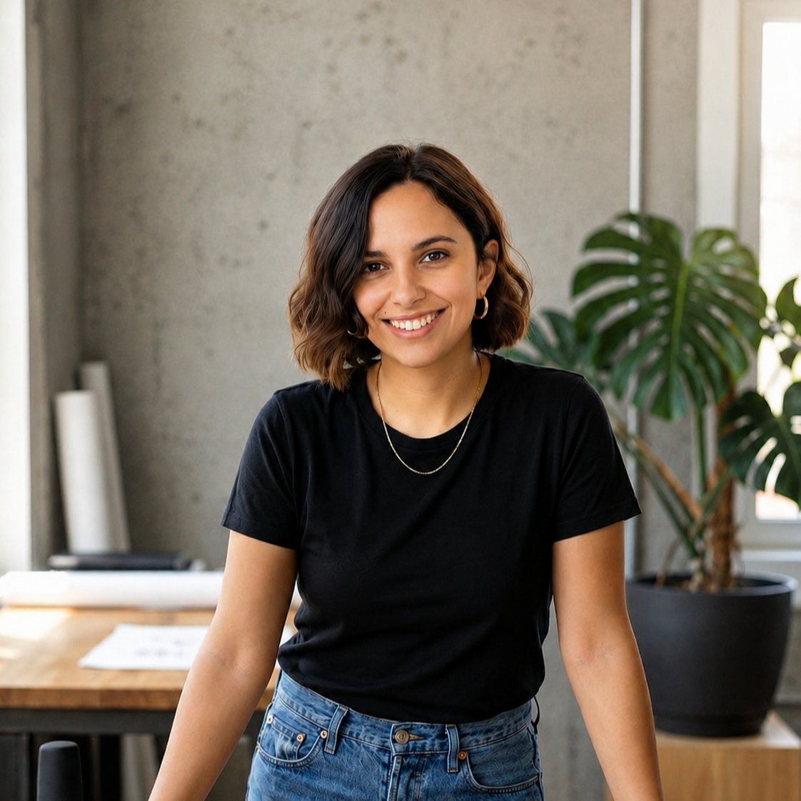

Deriva
App que conecta personas por afinidad profesional o de comunidad, usando el territorio como señal.

Product Designer · Saas B2B · Design System
Background en Diseño Industrial aplicado a interfaces escalables. Especializada en sistemas de diseño para productos SaaS B2B.

Una selección de tres casos que muestran cómo pienso, investigo y diseño.
App que conecta personas por afinidad profesional o de comunidad, usando el territorio como señal.

Auditoría UX de 6 flujos y 39 hallazgos, más Design System completo con validación WCAG AA.